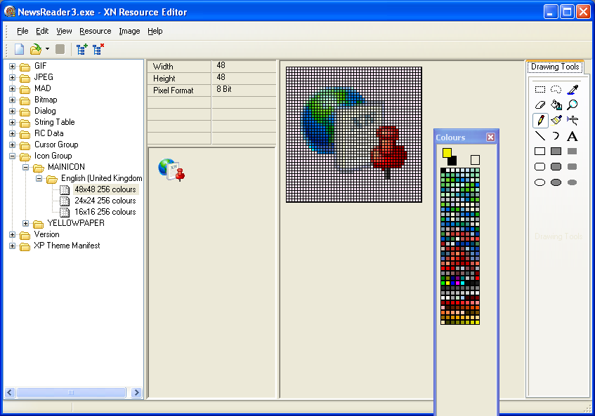

This website is an unofficial mirror of XN Resource Editor v3.0.0.1. I created it since the files are no longer available from the original author.
The Git repository contains the source code and prerequisites to build it.
Official website: http://www.wilsonc.demon.co.uk/d10resourceeditor.htm
